한국사능력검정시험-기본 (2023-02-11 기출문제)
1. (가)에 들어갈 내용으로 가장 적절한 것은? [1점]
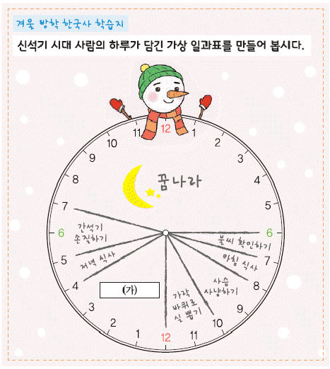
- 거친 무늬 거울 닦기
- 비파형 동검 제작하기
- 빗살무늬 토기 만들기
- 철제 농기구로 밭 갈기
(정답률: 89%)

2. (가) 나라에 대한 설명으로 옳은 것은? [2점]
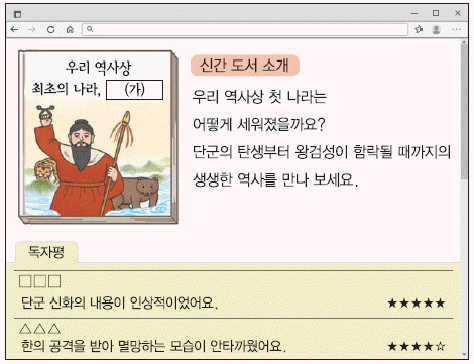
- 범금 8조가 있었다.
- 책화라는 풍습이 있었다.
- 낙랑군과 왜에 철을 수출하였다.
- 제가 회의에서 나라의 중요한 일을 결정하였다.
(정답률: 83%)
3. 다음 가상 인터뷰의 주인공으로 옳은 것은? [2점]
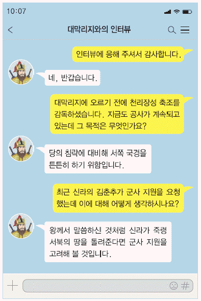
- 김유신
- 장보고
- 연개소문
- 흑치상지
(정답률: 77%)
4. 밑줄 그은 '이 국가'에 대한 설명으로 옳은 것은? [2점]
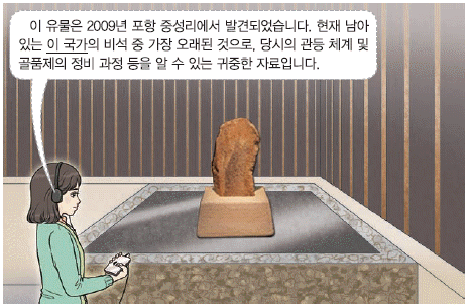
- 진대법을 실시하였다.
- 영고라는 제천 행사를 열었다.
- 화백 회의라 불리는 합의 기구가 있었다.
- 왕족인 부여씨와 8성의 귀족이 지배층을 이루었다.
(정답률: 56%)
5. (가)에 들어갈 문화유산으로 옳은 것은? [1점]
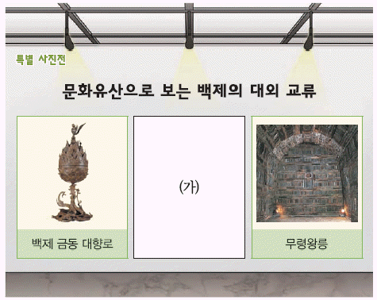
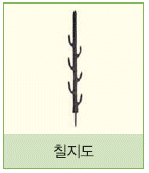
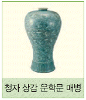
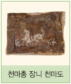
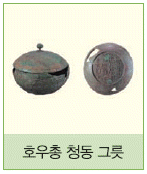
(정답률: 78%)
6. (가) 국가에 대한 설명으로 옳은 것은? [2점]
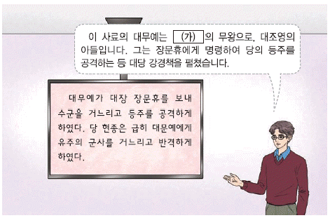
- 마한의 소국 중 하나였다.
- 상수리 제도를 실시하였다.
- 전성기에 해동성국이라 불렸다.
- 광덕, 준풍 등의 연호를 사용하였다.
(정답률: 65%)
7. 다음 퀴즈의 정답으로 옳은 것은? [2점]
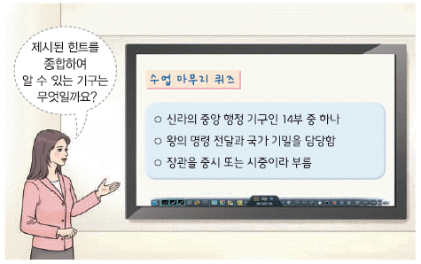
(정답률: 64%)
8. (가) 국가의 경제 상황으로 옳은 것은? [3점]
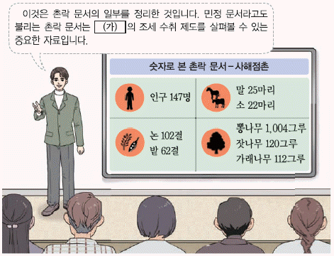
- 활구라고 불리는 은병이 유통되었다.
- 고추, 담배 등이 상품 작물로 재배되었다.
- 관청에 물품을 조달하는 공인이 활동하였다.
- 시장을 감독하기 위한 기구로 동시전이 설치되었다.
(정답률: 50%)
9. 밑줄 그은 '이 인물'로 옳은 것은? [1점]
- 강수
- 설총
- 김부식
- 최치원
(정답률: 68%)
10. (가) 왕에 대한 설명으로 옳은 것은? [2점]
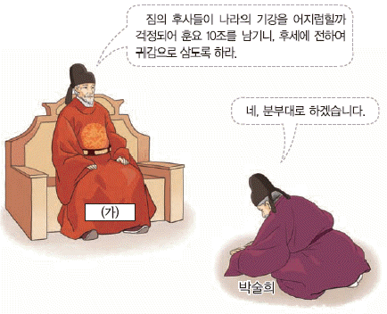
- 집현전을 설치하였다.
- 기인 제도를 실시하였다.
- 나선 정벌을 단행하였다.
- 노비안검법을 시행하였다.
(정답률: 62%)
11. (가)~(다)를 일어난 순서대로 옳게 나열한 것은? [3점]
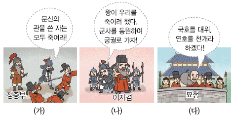
- (가) - (나) - (다)
- (나) - (가) - (다)
- (나) - (다) - (가)
- (다) - (나) - (가)
(정답률: 42%)
12. 다음 사건이 있었던 국가의 지방 통치에 대한 설명으로 옳은 것은? [2점]
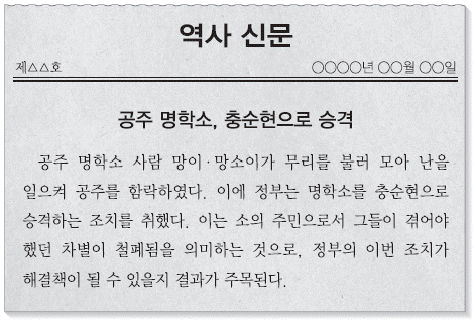
- 지방에 22담로를 두었다.
- 양계에 병마사를 파견하였다.
- 주요 지역에 5소경을 설치하였다.
- 전국을 5경 15부 62주로 나누었다.
(정답률: 45%)
13. 교사의 질문에 대한 답변으로 옳지 않은 것은? [2점]
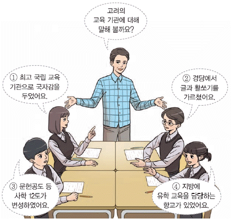
- ①
- ②
- ③
- ④
(정답률: 40%)
14. 밑줄 그은 '시기'에 있었던 사실로 옳은 것은? [2점]
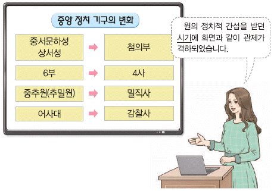
- 별무반이 편성되었다.
- 정동행성이 설치되었다.
- 6조 직계제가 실시되었다.
- 김흠돌의 난이 진압되었다.
(정답률: 45%)
15. (가) 왕의 업적으로 옳은 것은? [2점]
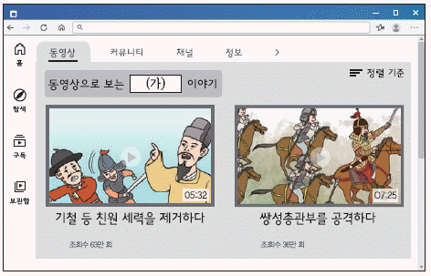
- 사비로 천도하였다.
- 북한산 순수비를 세웠다.
- 독서삼품과를 실시하였다.
- 전민변정도감을 설치하였다.
(정답률: 50%)
16. (가)에 들어갈 문화유산으로 가장 적절한 것은? [2점]
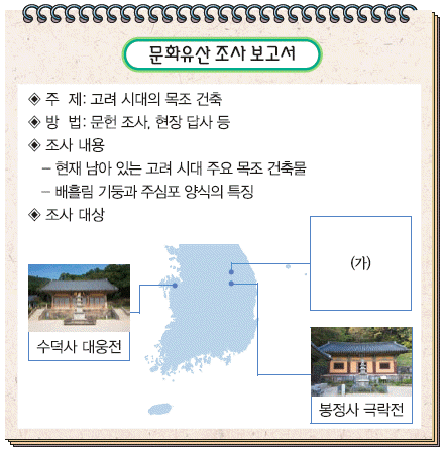
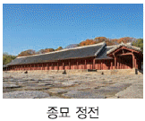
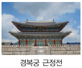
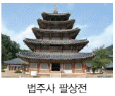
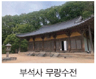
(정답률: 50%)
17. 다음 건의를 받아들여 제정한 법으로 옳은 것은? [3점]
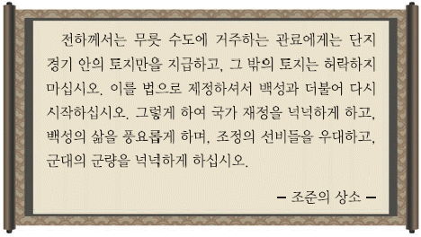
- 과전법
- 대동법
- 영정법
- 호패법
(정답률: 44%)
18. 밑줄 그은 '왕'의 재위 시기에 있었던 사실로 옳은 것은? [2점]
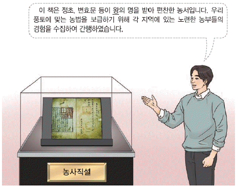
- 자격루가 제작되었다.
- 화통도감이 설치되었다.
- 삼국유사가 저술되었다.
- 백두산정계비가 건립되었다.
(정답률: 54%)
19. 밑줄 그은 '왕'에 대한 설명으로 옳은 것은? [2점]
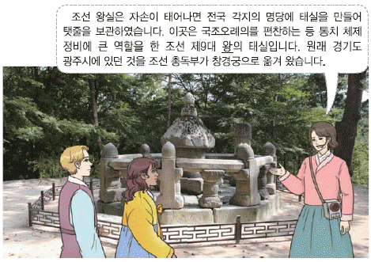
- 훈민정음을 창제하였다.
- 경국대전을 완성하였다.
- 초계문신제를 시행하였다.
- 위화도 회군을 단행하였다.
(정답률: 56%)
20. (가), (나) 사이의 시기에 있었던 사실로 옳은 것은? [3점]
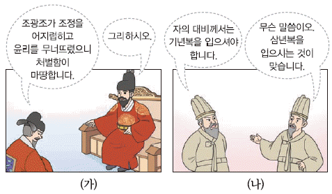
- 김옥균 등이 갑신정변을 일으켰다.
- 사림이 동인과 서인응로 나뉘었다.
- 성균관 입구에 탕평비가 건립되었다.
- 왕자의 난으로 정도전 등이 피살되었다.
(정답률: 53%)
21. (가)에 들어갈 내용으로 옳은 것은? [1점]
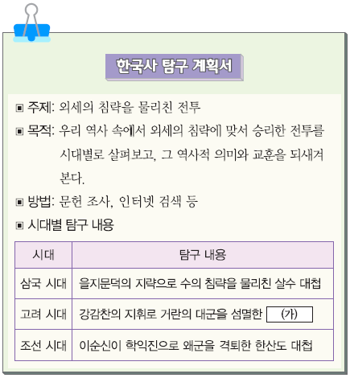
- 귀주 대첩
- 진포 대첩
- 행주 대첩
- 황산 대첩
(정답률: 56%)
22. 다음 대화에 나타난 시기의 경제 상황으로 옳은 것은? [2점]
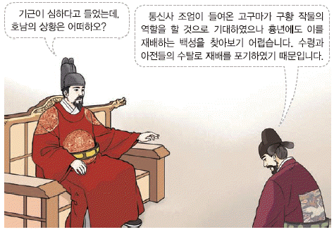
- 상평통보가 유통되었다.
- 전시과 제도가 실시되었다.
- 벽란도가 국제 무역항으로 번성하였다.
- 팔관회의 경비 마련을 위해 팔관보가 설치되었다.
(정답률: 42%)
23. (가)에 들어갈 인물로 옳은 것은? [1점]
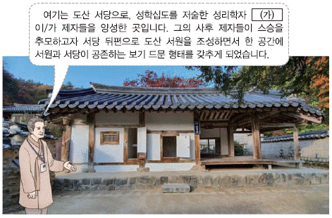
- 서희
- 이황
- 박제가
- 정몽주
(정답률: 54%)
24. 다음 상황 이후에 전개된 사실로 옳은 것은? [2점]
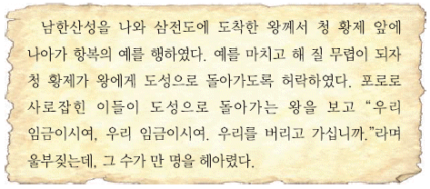
- 북벌이 추진되었다.
- 강화도로 천도하였다.
- 쓰시마섬을 정벌하였다.
- 최씨 무신 정권이 붕괴하였다.
(정답률: 45%)
25. (가)에 들어갈 부대로 옳은 것은? [2점]
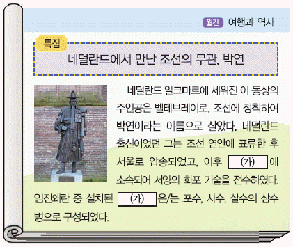
- 9서당
- 별기군
- 삼별초
- 훈련도감
(정답률: 49%)
26. 밑줄 그은 '시기'의 사실로 옳은 것은? [3점]
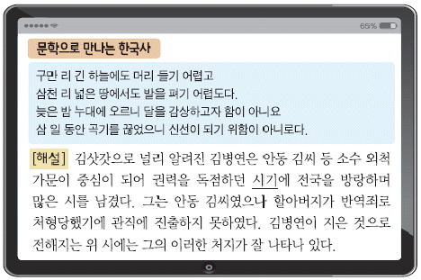
- 최승로가 시무 28조를 올렸다.
- 수양 대군이 계유정난을 일으켰다.
- 지방 세력 통제를 위해 사심관 제도가 실시되었다.
- 삼정의 문란을 바로잡기 위해 삼정이정청이 설치되었다.
(정답률: 29%)
27. 밑줄 그은 '이 인물'에 대한 설명으로 옳은 것은? [2점]
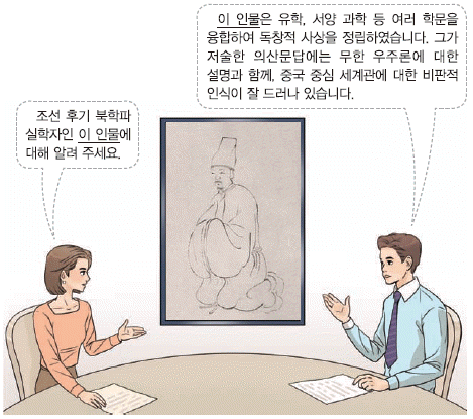
- 추사체를 창안하였다.
- 지전설을 주장하였다.
- 사상 의학을 정립하였다.
- 대동여지도를 제작하였다.
(정답률: 35%)
28. (가)에 들어갈 문화유산으로 옳은 것은? [1점]
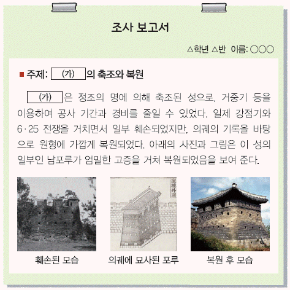
- 공산성
- 전주성
- 수원 화성
- 한양 도성
(정답률: 49%)
29. (가)에 들어갈 내용으로 가장 적절한 것은? [2점]
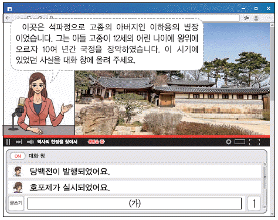
- 녹읍이 폐지되었어요.
- 장용영이 설치되었어요.
- 척화비가 건립되었어요.
- 요동 정벌이 추진되었어요.
(정답률: 33%)
30. (가)~(다)를 일어난 순서대로 옳게 나열한 것은? [3점]
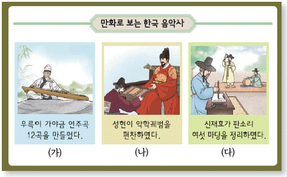
- (가) - (나) - (다)
- (나) - (가) - (다)
- (나) - (다) - (가)
- (다) - (나) - (가)
(정답률: 29%)
31. 밑줄 그은 '조약'에 대한 설명으로 옳은 것은? [3점]
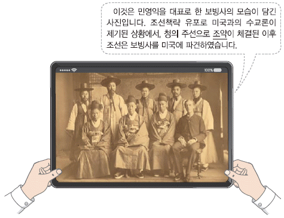
- 최혜국 대우가 규정되어 있다.
- 통감부가 설치되는 결과를 가져왔다.
- 부산, 원산, 인천을 개항하는 배경이 되었다.
- 일본 공사관에 경비병이 주둔하는 계기가 되었다.
(정답률: 30%)
32. (가)에 들어갈 내용으로 옳은 것은? [2점]
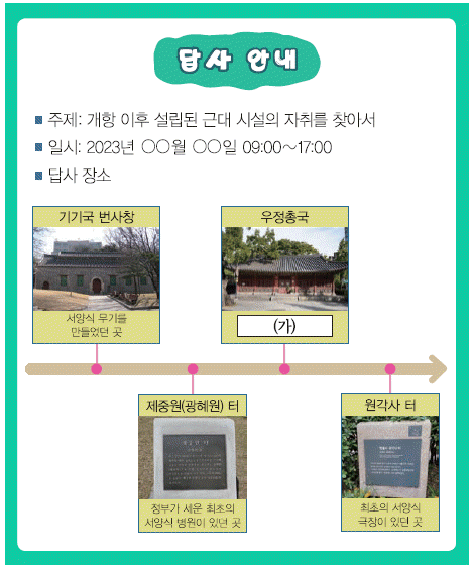
- 나운규의 아리랑이 개봉되었던 곳
- 근대적 우편 업무를 담당하였던 곳
- 순 한문 신문인 한성순보가 발간되었던 곳
- 헐버트를 교사로 초빙해 근대 학문을 가르쳤던 곳
(정답률: 48%)
33. (가)에 들어갈 기구로 옳은 것은? [2점]
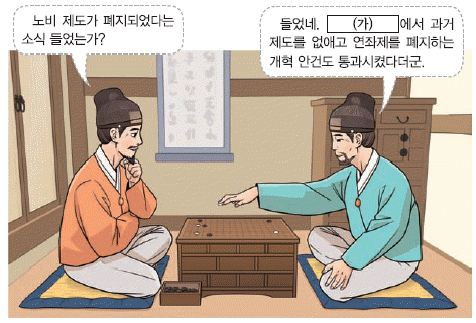
- 비변사
- 원수부
- 홍문관
- 군국기무처
(정답률: 33%)
34. 밑줄 그은 '이 신문'에 대한 설명으로 옳은 것은? [2점]
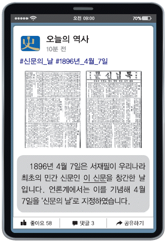
- 천도교의 기관지였다.
- 박문국에서 발간하였다.
- 한글판과 영문판으로 발행되었다.
- 시일야방성대곡이라는 논설을 실었다.
(정답률: 28%)
35. 다음 가상 뉴스가 보도된 이후에 전개된 사실로 옳은 것은? [2점]
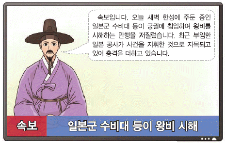
- 외규장각 도서가 약탈되었다.
- 김윤식이 영선사로 파견되었다.
- 제너럴 셔면호 사건이 발생하였다.
- 고종이 러시아 공사관으로 피신하였다.
(정답률: 45%)
36. (가)에 들어갈 단체로 옳은 것은? [1점]
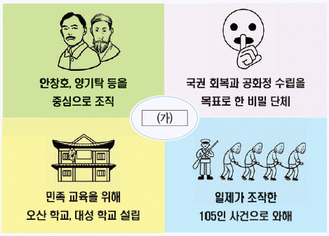
- 근우회
- 보안회
- 신민회
- 조선어 학회
(정답률: 44%)
37. (가)에 들어갈 인물로 옳은 것은? [2점]
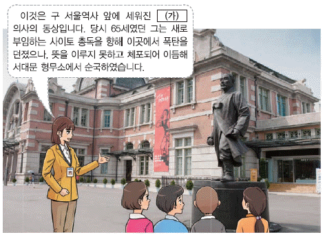
- 김구
- 강우규
- 윤봉길
- 이승만
(정답률: 21%)
38. 다음 인물에 대한 설명으로 옳은 것은? [3점]
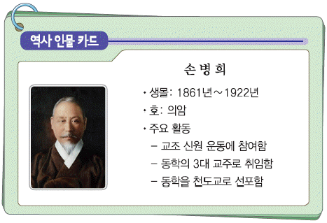
- 청산리 전투를 승리로 이끌었다.
- 하얼빈에서 이토 히로부미를 처단하였다.
- 헤이그 만국 평화 회의에 특사로 파견되었다.
- 민족 대표 33인 중 한 명으로 독립 선언에 참여하였다.
(정답률: 46%)
39. (가)에 들어갈 민족 운동으로 옳은 것은? [1점]
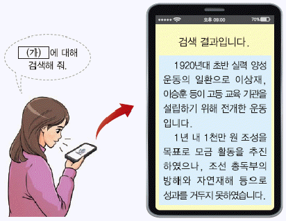
- 6·10 만세 운동
- 물산 장려 운동
- 광주 학생 항일 운동
- 민립 대학 설립 운동
(정답률: 36%)
40. (가)에 해당하는 인물로 옳은 것은? [2점]
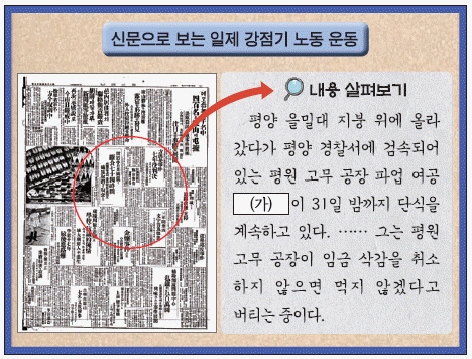
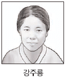
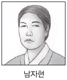
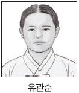
(정답률: 29%)
41. (가)에 들어갈 무장 투쟁 단체로 옳은 것은? [3점]
- 의열단
- 북로 군정서
- 조선 혁명군
- 한국 광복군
(정답률: 31%)
42. 밑줄 그은 '시기'에 볼 수 있는 모습으로 가장 적절한 것은? [2점]
- 원산 총파업에 참여하는 노동자
- 만민 공동회에서 연설하는 백정
- 황국 신민 서사를 암송하는 학생
- 조선 태형령을 관보에 싣는 관리
(정답률: 35%)
43. (가)에 들어갈 단체로 옳은 것은? [2점]
- 독립 의군부
- 민족 혁명당
- 조선 의용대
- 조선 건국 동맹
(정답률: 27%)
44. 밑줄 그은 '국회'에 대한 설명으로 옳은 것은? [3점]
- 3선 개헌한을 통과시켰다.
- 농지 개혁법을 제정하였다.
- 5·16 군사 정변으로 해산되었다.
- 국회의원이 3분의 1을 대통령이 추천하였다.
(정답률: 15%)
45. 밑줄 그은 '정부' 시기에 볼 수 있는 사회 모습으로 가장 적절한 것은? [2점]
- 부마 민주 항쟁에 참여하는 학생
- 서울 올림픽 대회 개막식을 관람하는 시민
- 금융 실명제 시행 속보를 시청하는 회사원
- 반민족 행위 특별 조사 위원회에 체포되는 친일 행위자
(정답률: 29%)
46. (가) 정부 시기의 경제 상황으로 옳은 것은? [2점]
- 제1차 경제 개발 5개년 계획이 수립되었다.
- 경제 협력 개발 기구(OECD)에 가입하였다.
- 저금리·저유가·저달러의 3저 호황이 있었다.
- 미국과의 자유 무역 협정(FTA)이 체결되었다.
(정답률: 30%)
47. 학생들이 공통으로 이야기하는 인물로 옳은 것은? [2점]
- 김대중
- 김영삼
- 윤보선
- 최규하
(정답률: 45%)
48. (가)에 들어갈 명칭으로 옳은 것은? [1점]
- 단오
- 동지
- 한식
- 정월 대보름
(정답률: 39%)
49. (가)에 들어갈 섬으로 옳은 것은? [1점]
- 독도
- 진도
- 거문도
- 제주도
(정답률: 54%)
50. 학생들이 공통으로 이야기하는 지역으로 옳은 것은? [2점]
- 강릉
- 군산
- 대구
- 진주
(정답률: 45%)